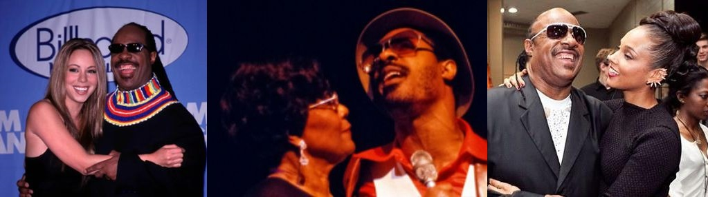
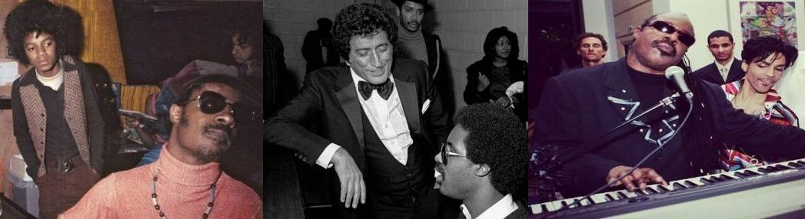

Neither more nor less than
7 decades endorse him not only as a musician, but also as a generous person, philanthropist and social activist, always willing to help in just causes and humanitarian organizations such as UNICEF, of which he is a Messenger of Peace. Stevie Wonder is one of the few human beings who was blessed by a magic wand that through music and his wise actions has not stopped preaching and imbuing us with love and sanity in a troubled and violent world. There are numerous
awards and recognitions that have been granted to him, but the most important is the one that he receives daily from contact with the public and other personalities that are part of the culture and art of the planet. Gratitude in many of the phrases and images that we sprinkle below as if it were a large cake, whose main ingredient is the
legend of music and life, Stevie Wonder.
Freddie Mercury once said of Stevie Wonder that "
he was the best ballad songwriter in the world".
Paul Simon during his Best Album speech at the 1976 Grammys, "
jokingly thanked Stevie Wonder for not releasing an album that year". Wonder had won Grammys for the past two years, finally winning the next one in 1977.
Tony Bennett said of Stevie "
is one of the greatest jazz artists that ever lived".
Lady Gaga reported "
People use the word "genius" too often, but Stevie Wonder is truly a genius.".
Bob Dylan comments "
If anyone can be called a genius, Stevie Wonder can be.".
Herbie Hancock maintained "
he is the best example of what a human being can become. I am still so proud to have played with him on that milestone (Songs In The Key Of Love). There was nothing like it before, nothing.".
Eric Clapton proclaimed "
Stevie Wonder has to be the greatest drummer of our time".
Prince called Stevie Wonder a "
role model and inspiration who I look up to a great deal for the way he crafted music and his connection to the spirit".
Marvin gaye confessed "
I hated him when he came out before me, because he had twice the energy of all of us put together. She drained our fans dry".
Quincy Jones said of Stevie "
he is a deeply creative person and also a deep human being. You combine those two things together, you have such a generous person".
Luciano Pavarotti also uttered these beautiful words "
We listen to him, we enjoy his music because we are facing a great, a great genius of music".
Smokey Robinson who has known Stevie since childhood pronounced "
he is one of the most prolific composers of this millennium and many millennia to come".
Bonnie Rait refers to Stevie saying "
Because it was him, all that synth stuff was really cool. He was God to me".
Michael Jackson confessed "
To me he's a musical prophet. I always love him, but a lot of people respect Stevie".

Halle Berry stated "
he's amazing, Stevie can't see with his eyes, but he can see so much more than any of us. Stevie sees with her heart. Her vision is full of promises of love, union, peace and unity".
Gloria Estefan told him "
Stevie, not only are you one of the most amazing artistic treasures in our world, but you are an amazing human being!".
Elton John among many other nice phrases he commented "
wherever I go in the world, I always carry a copy of Songs in the Key of Life. For me, it's the best record ever made, and I'm always in awe after listening to it. I think I'm a pretty good musician, but he's in another league".
Anita Baker in reference to Stevie said "
he has written and performed some of the most memorable music of our time. But more importantly, he has been an inspiration as a person who cares as much about his fellow man as he does about his music.".
Adam Levine component of Maroon 5 affirmed "
He is the all-encompassing idol. Musically he is one of my favorites in the world. As a human being, he is one of the greatest people to have walked the earth. He is an amazing person and I really adore him for that".
Paul McCartney former member of the Beatles commented on a collaboration "
Stevie came into the studio in Los Angeles and listened to the song "Only Our Hearts" for about ten minutes and totally got it. She just went to the mic and within 20 minutes she had nailed this dynamite solo. When you listen, you just think: "How do you come up with that?" But it's just because he's a genius, that's why".
Brian McKnight also thanked Stevie saying "
I wouldn't be who I am if it wasn't for Stevie Wonder".
Mariah Carey one of the great voices of music pronounced "
Stevie Wonder is one of the most incredible singer-songwriters in history and one of the most beautiful spirits in the entire world.".
Justin Timberlake joins the long list of artists for whom "
Stevie has been a tremendous influence in my life, as an artist, songwriter and producer.".
Josh Groban also relates how "
Stevie Wonder writes these universally epic melodies that lack a bit of genre. He has no gender. No one writes about love better than Stevie Wonder.".
Chick Corea another music legend manifested from Stevie "
I consider him one of the most important musicians that has ever touched the planet earth. I consider it a guiding light".
Yolanda Adams stated "
He inspired me to be a better artist. There are many people who do one thing but do not do everything. This man can with everything".
Kanie West full of admiration he admitted "
I'm not trying to compete with what's out there now. I'm really trying to compete with Innervisions and Songs in the Key of Life. It sounds musically blasphemous to say such a thing, but why not set that as your standard?".
